السلسلة 99
السيارة (صنف B) · 25 سؤال بالصوت. حاول تجاوب بوحدك، من بعد شوف الجواب.
السؤال 1
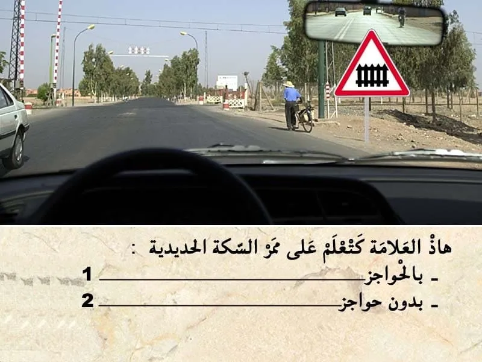
بيّن الجواب
الجواب الصحيح: 1
هذا العلامة . هي علامة ديال الخطر .
- كتعلم على ممر على السكة الحديدية و هذا الممر بالحواجز .
و بالتالي الجواب الصحيح هو رقم 1.
السؤال 2
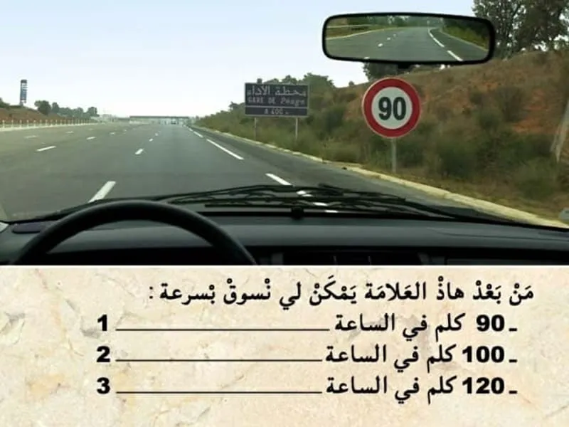
بيّن الجواب
الجواب الصحيح: 1
هذا العلامة ديال المنع. "تحديد السرعة"
كتعلم على انه ممنوع السير بأكثر من 90 كلم في الساعة.
✅ يمكن لي نمشي ب سرعة اقل من 90 كلم في الساعة. بشرط ما تكونش اقل من 60 كلم في الساعة. حيت أنا داخل الطريق السيار.
السؤال 3
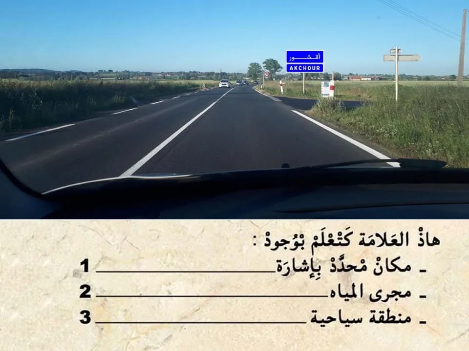
بيّن الجواب
الجواب الصحيح: 1
هذا العلامة ديال الإرشاد.
كتضم كتابة بالازرق يعني مكان محدد بإشارة .
السؤال 4
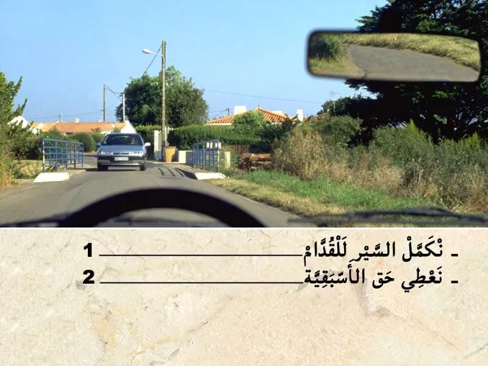
بيّن الجواب
الجواب الصحيح: 2
في هذا القنطرة التقابل غير ممكن .
و بالتالي لي سبق الاول للقنطرة هو لي عنده حق الأسبقية.
في هذا الحالة واجب عليا نعطي حق الأسبقية.
السؤال 5
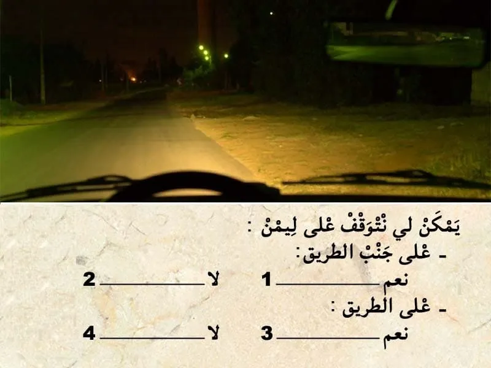
بيّن الجواب
الجواب الصحيح: 1 و 4
التوقف ممنوع على الطريق .
اما على جنب الطريق خاص غير ما يكون حتى شي مانع,
السؤال 6
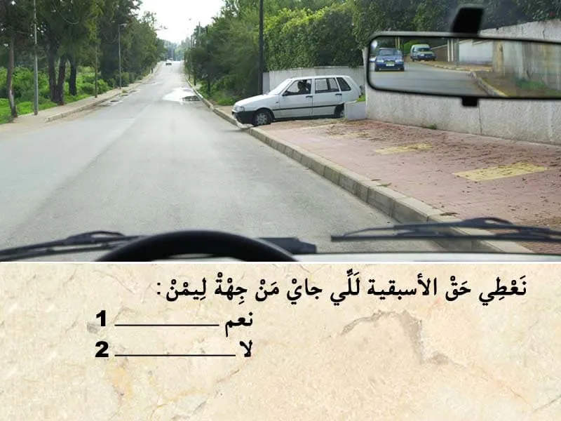
بيّن الجواب
الجواب الصحيح: 2
فهذا الحالة انا غادي في الطريق الرئيسية و هذا السيارة خارجة من الطريق ثانوية .
و بالتالي هي لي واجب عليها تعطيني حق الأسبقية.
السؤال 7
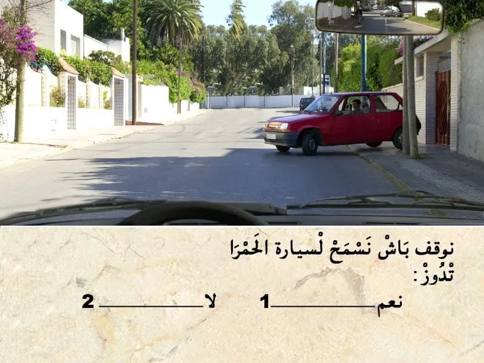
بيّن الجواب
الجواب الصحيح: 2
هذا العربة متوقفة و بالتالي هي لي واجب عليها تعطيني حق الأسبقية .
السؤال 8
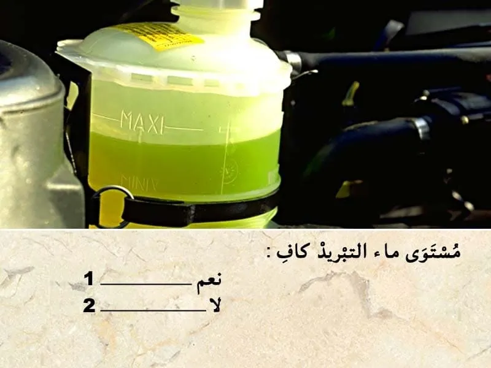
بيّن الجواب
الجواب الصحيح: 1
مستوى ماء التبريد في هذا الخزان بين الحد الأقصى و الحد الأدنى. و قريب من الحد الأقصى.
و بالتالي مستوى ماء التبريد كاف.
السؤال 9
بيّن الجواب
الجواب الصحيح: 2 و 3
في حالة وقوع عطب مفاجئ في الحصار الرئيسي.
الطريق الصحيحة هي :
✅ ننقص من السرعة. يعني نرفع الرجل ديالي على دواسة السرعة.
✅ نشغل اضواء النجدة.
✅ ننقص من درجة السرعة تدريجيا.
✅ نستعمل الحصار ديال اليد .
السؤال 10
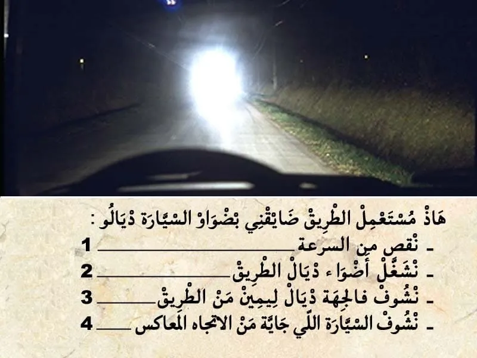
بيّن الجواب
الجواب الصحيح: 1 و 3
في هذا الحالة مستعمل الطريق لي قبالتي ضايقني باضواء الطريق.
✅ يمكن لي نبه بإشارة ضوئية بأضواء الطريق.
✅ ننقص من السرعة .
✅ نشد ليمن ديالي .
✅ نشوف في الجهة ديال ليمن من الطريق ديالي .
السؤال 11
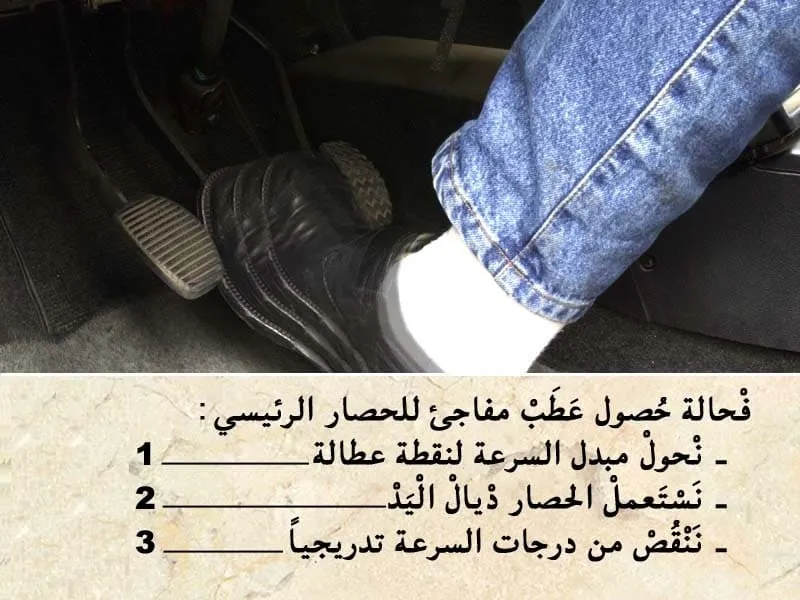
بيّن الجواب
الجواب الصحيح: 2 و 3
في حالة حصول عطب في الحصار الرئيسي.
باش ندارك الأمر . يمكن لي نستعمل الحصار ديال اليد.
و ننقص من دراجات السرعة تدريجيا.
اما الا حولت مبدل السرعة لنقطة عطالة غادي تصبح السيارة خفيفة و بالتالي صعيب باش تنقص من السرعة.
السؤال 12

بيّن الجواب
الجواب الصحيح: 1
تعتبر السياقة تحت تأثير الكحول عاملا خطيرا ورئيسيا يتسبب في حوادث السير في جميع أنحاء العالم. ويزيد احتمال وقوع حادثة سير مع ارتفاع مستويات الكحول في الدم، إذ يكون سائق تحت تأثير الكحول أكثر عرضة ب 17 مرة من غيره لأن يتسبب في حادثة سير مميتة.
✍يؤثر الكحول من خلال الدورة الدموية على جميع أعضاء الجسم لا سيما الدماغ، وتكون له عواقب سلبية على الأداء الفكري للسائق، خاصة فيما يخص تقييم المخاطر.
السؤال 13

بيّن الجواب
الجواب الصحيح: 1
السياقة تحت تأثير الكحول كتعتبر جنحة الا تجاوز نسبة الكحول في الهواء لي خارج من الفم 0.10 غ في الليتر.و كيتم خصم 6 نقاط . و يتم إقاف المركبة.
السؤال 14

بيّن الجواب
الجواب الصحيح: 1
✍عند وقوع حادثة سير أدت إلى خسائر مادية، يجب على السائق الحفاظ على الهدوء والحرص على ملء المعاينة الودية بعناية.
لا تعتبر المعاينة الودية إطلاقا اعترافا بالمسؤولية في حال حدوث أضرار بدنية، تقوم مصالح الأمن الوطني أو الدرك الملكي بإنجاز تقرير يرفق بهذا المحضر.
✍تعبر هذه المعاينة عن الأحداث والحقائق وتستخدم من أجل التعويضات اللازمة وهي ضمان لتسوية سريعة للحوادث لذا ينصح بالاحتفاظ بنموذج فارغ منها في المركبة.
✍يجب على السائق إبلاغ مؤمنه "شركة التأمين" عن الحادثة داخل أجل لا يتجاوز 5 أيام.
✅ يتكون محضر المعاينة الودية من العناصر الأساسية التالية:
✔ تاريخ الحادثة. ✔ المكان بالتحديد. ✔ المصابون حتى بإصابات خفيفة. ✔ الأضرار المادية التي تلحق بغير المركبتين أ و ب. ✔ الأضرار المادية التي تلحق بغير المركبتين أ و ب. ✔ الشهود. ✔ المركبة أ / المركبة ب. ✔ المركبة. ✔ المؤمن عليه. ✔ السائق. ✔ توضيح لنقطة الاصطدام الأصلية. ✔ الأضرار الظاهرة. ✔ الرسم التخطيطي. ✔ الملاحظات. ✔ التوقيعات.
السؤال 15
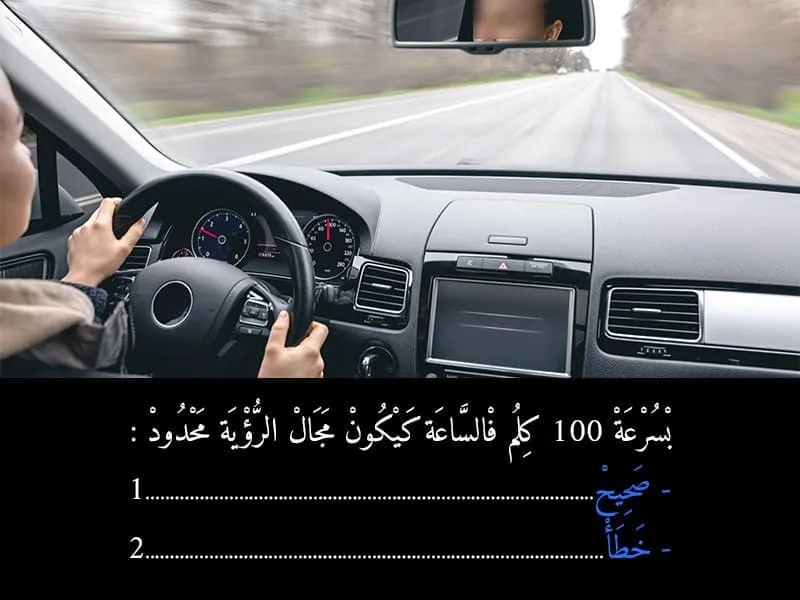
بيّن الجواب
الجواب الصحيح: 1
نعم بسرعة عالية كيصبح مجال الرؤية محدود .
-كلما تزادت السرعة كينقص معه مجال الرؤية.
السؤال 16
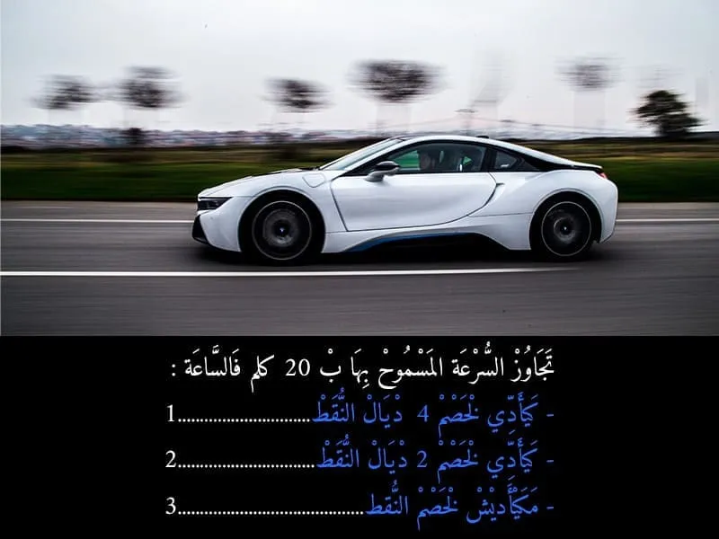
بيّن الجواب
الجواب الصحيح: 1
🚨🚨 سؤال تم تصحيحه نتيجة للتعديل الاخير في المخالفات.
- تجاوز السرعة ب 20 كلم في الساعة كتعتبر مخالفة من الدرجة الثانية و كتعرض السائق لغرامة مالية من 500 حتى ل 1000 درهم .
- و ما كتعرض السائق لسحب نقاط من رصيد رخصة السياقة .
- 🚨فقط التغيير في عدد النقط المسحوبة. بالنسبة لتجاوز السرعة ب 20 كلم في الساعه . اما الا تجاوزات 20 كيتم سحب 2 ديال النقاط .
السؤال 17
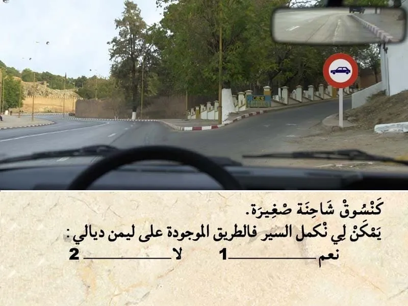
بيّن الجواب
الجواب الصحيح: 2
هذا العلامة ديال المنع.
كتعلم على انه ممنوع المرور على ليمن على جميع انواع العربات دات محرك.
السؤال 18
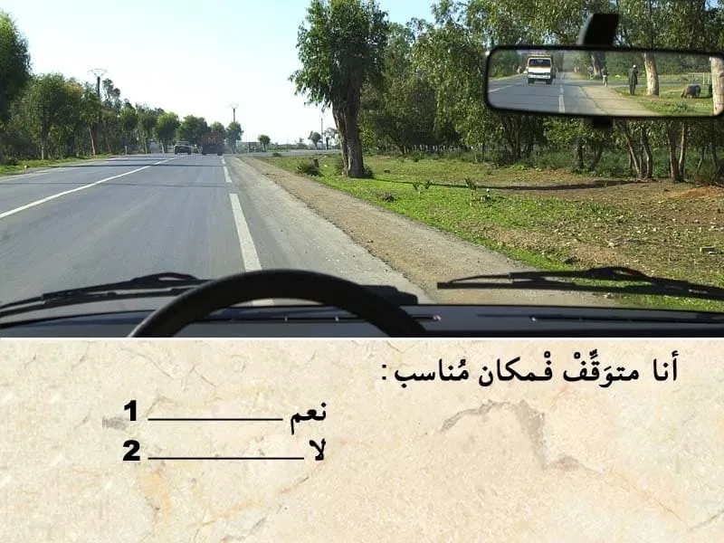
بيّن الجواب
الجواب الصحيح: 2
باش نتوقف من الواجب تكون العربة ديالي خارج مسلك ديال السير.
فهذا الحالة نص العربة ديالي وسط المسلك. و بالتالي متوقف في مكان غير مناسب.
السؤال 19
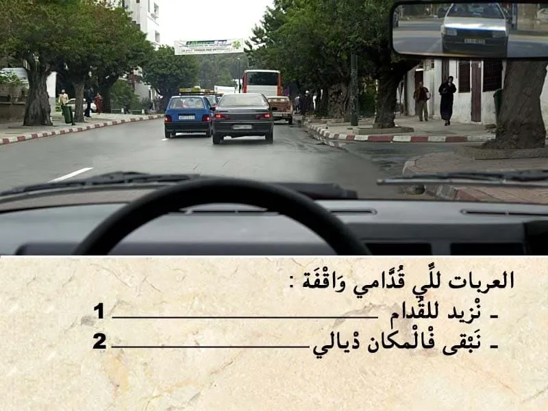
بيّن الجواب
الجواب الصحيح: 2
العربات لي قدامي واقفة . الا زدت وراهم غادي نغلق هذا ملتقى الطرق لي قدامي .
في هذا الحالة يمكن لي نتوقف في هذا المكان باش نسمح لمستعملي الطريق باش يدوزوا
السؤال 20
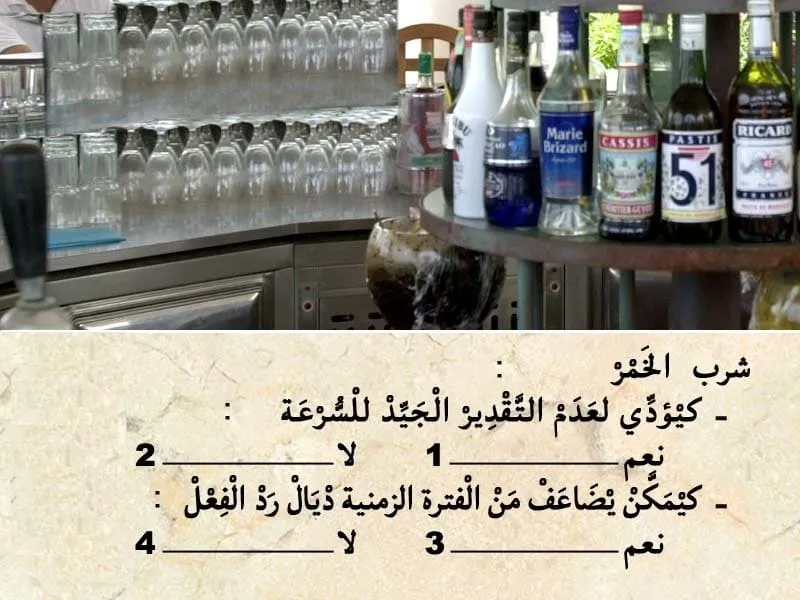
بيّن الجواب
الجواب الصحيح: 1 و 3
شرب الخمر يمكن ينقص من التركيز ديال السائق.
و بالتالي يزيد من الفترة الزمنية لرد الفعل .
و كيؤدي لعدم التقدير الجيد للسرعة.
السؤال 21
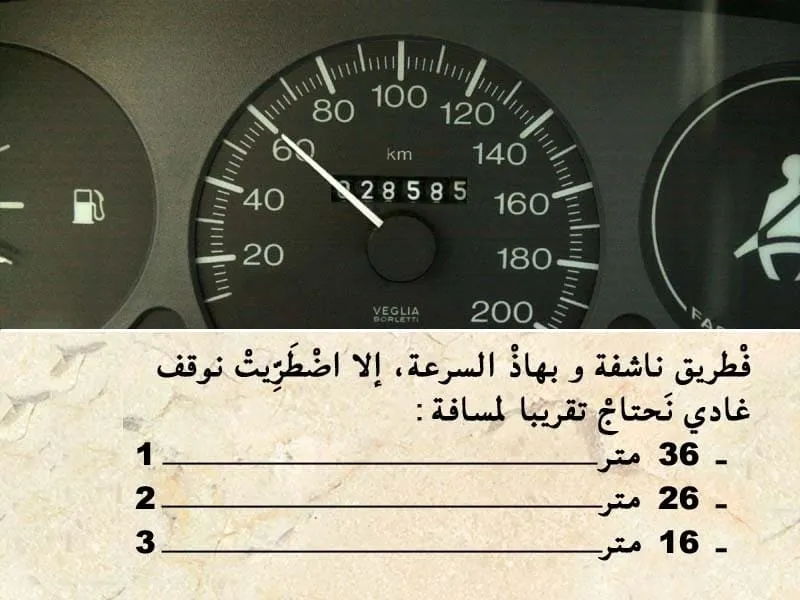
بيّن الجواب
الجواب الصحيح: 1
مسافة التوقف كيتم حسابها بالعلاقة التالية :
- العشر ديال الصعة مضروب في نفسه . يعني في هذه الحالة :
- السرعة 60 كلم في الساعة .
و بالتالي مسافة التوقف : 6*6=36 متر.
--- يعني الجواب رقم 1.
السؤال 22
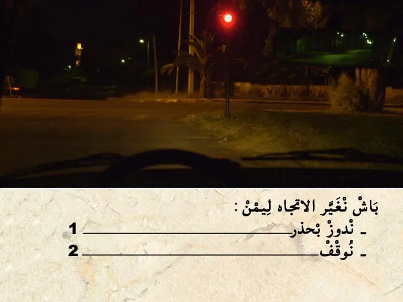
بيّن الجواب
الجواب الصحيح: 2
فهذا ملتقى الطرق عندي ضوء ثلاثي الألوان. و الضوء الاحمر شاعل.
و بالتالي واجب عليا نوقف و ننتظر حتى يشعل الضوء الاخضر.
السؤال 23

بيّن الجواب
الجواب الصحيح: 2
باش نتوقف في هذا مكان التوقف . كاين إنارة عمومية و بالتالي يمكن لي نتوقف بلا ما نستعمل اضواء التوقف.
السؤال 24

بيّن الجواب
الجواب الصحيح: 2
هذا العلامة ديال المنع. "تحديد السرعة"
كتعلم على انه ممنوع السير بأكثر من 40 كلم في الساعة.
✅ يمكن لي نمشي باي سرعة اقل من 40 كلم في الساعة.
السؤال 25
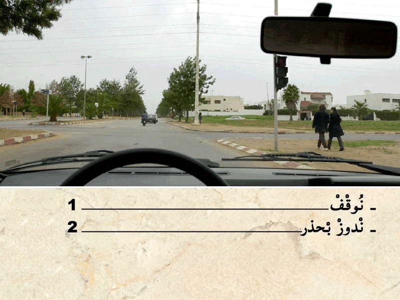
بيّن الجواب
الجواب الصحيح: 2
في هذا الحالة الضوء الأصفر رفراف يعني الغاء إشارة الضوء ثلاثي الألوان و بالتالي الأسبقية لمول ليمن . لي ليمن ديالوا خاوي يدوز .